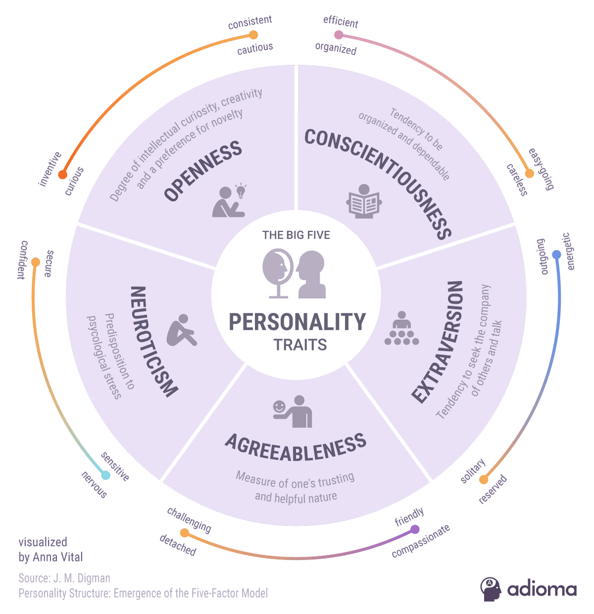

How Personality Plays a Role in Behavior of Individuals During COVID-19
Carrie Shim. 7/9/2020

The Big Five Personality Traits help define human behavior. (J.M. Digman)
The Big Five Personality Traits help define human behavior. (J.M. Digman)
While examining collective human behavior due to appeals of mass cooperation, behavioral psychologists from various parts of the world have made speculations about the different behaviors of individuals based on the Big Five personality traits (extraversion, conscientiousness, neuroticism and openness to experience) during the COVID-19 lockdown. The relationship between the personality and behavior of individuals during the COVID-19 lockdown is something important to keep in mind during this time as it may offer vital insight as to why certain people act differently in a crisis such as COVID-19.
According to an article from Psychology Today, extraversion, a personality trait demonstrated with higher assertiveness and sociability, has a notable impact on the response of individuals to the COVID-19 lockdown. Individuals with higher levels of extraversion are less likely to social distance and adhere to government-issued safety practices. On the other hand, those who are more introverted are more likely to follow social distancing measures. This is evident across social media platforms, as extroverted individuals tend to deviate from social distancing practices, by going to public places like the beach, more frequently than introverts.
Conscientiousness is a personality trait shown by the tendency to be organized and responsible. Those with high conscientiousness are more likely to adhere to the rules of social distancing and practice hygiene to protect themselves and others. However, those with lower conscientiousness are less likely to wash their hands and wear a mask, despite the impact their actions can have on the rest of society. Neuroticism is a personality trait that describes the tendency to be more moody and emotional. Those with higher levels of neuroticism are more likely to follow personal restrictions in order to protect others from COVID-19 but adversely are also more susceptible to psychological disorders such as depression, anxiety and PTSD from the socially isolating conditions of the lockdown. Their moods may change very easily and the pandemic may have a large, negative impact on their mental health compared to those with lower levels of neuroticism.
The other two of the Big Five personality traits, agreeableness and openness to experience, may also affect the behavior of individuals during this pandemic. Those with higher agreeableness are more likely to be cooperative with social distancing measures while maintaining an optimistic outlook on the situation. Conformity and compliance come easier to those with higher agreeableness, as they tend to avoid questioning the judgment of others in positions higher than themselves. Those with higher openness to experience may be more open-minded to the COVID-19 situation and see it as an experience they can learn from.
In addition to the Big Five personality traits, self-efficacy, an individual’s belief in their capacity to execute behaviors necessary to produce a specific outcome, has an effect on how an individual may react to COVID-19. Those with lower self-efficacy are more susceptible to feeling helpless and anxious during the pandemic. Self-efficacy and locus of control, which is how strongly an individual believes they have control over their lives, are correlated. For example, individuals with a lower self-efficacy showed a stronger external locus of control, meaning that they believe their successes or failures are attributed to external factors such as luck or fate. In the meantime, those with higher self-efficacy have a more internal locus of control, meaning that they believe they can control the outcome of events in their lives. Although self-efficacy is not considered a Big Five personality trait, it can still impact the behavior of individuals during this pandemic.
So why is this important? Viewing the masses as individuals may be helpful for learning how to better cope with this pandemic. It is always beneficial to self-reflect and understand yourself in order to grow and develop self-awareness. Knowing your personality traits during this time ultimately plays a large role in understanding the behaviors and feelings of others and yourself. It may even be something for experts to consider during this highly stressful time.